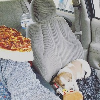

Jasper and I.
Jasper and I met in May 2016 when I had decided I needed a new companion in my life. I had always been an
avid dog lover but never really had the space or finances to accomodate a dog. I had looked at a few rescues
but found that they were not an ideal fit. One night after becoming discouraged about not finding the dog for
me yet, I decided to browse a local for sale website. There I saw a listing for Catahoula mix puppies about
4 hours away from my location. I looked through the photos and one puppy in particular caught my attention and
somehow I knew I had to have him. I contacted the person selling them and made sudden arrangements to drive
to get him the next day. I had stopped at petsmart to get everything he would need and then some. I have a
major tendency to spoil my pets. Google Maps had miscalculated my route and I ended up searching for the location
to pick up Jasper at without any technological assistance. It was a frustrating ordeal but well worth it. After I
picked him up, we had our first pizza together before driving home. His of course was a squeak toy.
What We Do For Fun
Jasper has grown quite a bit since I first got him; about 80 pounds to be exact. He also grew some really
long legs. We enjoy getting outside during the months that have decent weather. During winter, we still go out but
usually for less time. We only enjoy the cold and snow for a few minutes before wanting to go inside to warm up.
We go rollerblading on a nearly daily basis from Spring to Fall. Otherwise we often go out to parks and fields to run
and play fetch. Jasper loves plush toys but he also loves destroying them. Tug of war with rope and fetching a
tennis ball are also things Jasper enjoys. He even knows the difference between the commands "toy", "ball", "rope",
and "bone."
In addition to plenty of play and exercise, Jasper happily curls up next to me whenever I'm watching a movie or doing
homework. I am thankful that he seems to have a balanced interest in play and in relaxation.